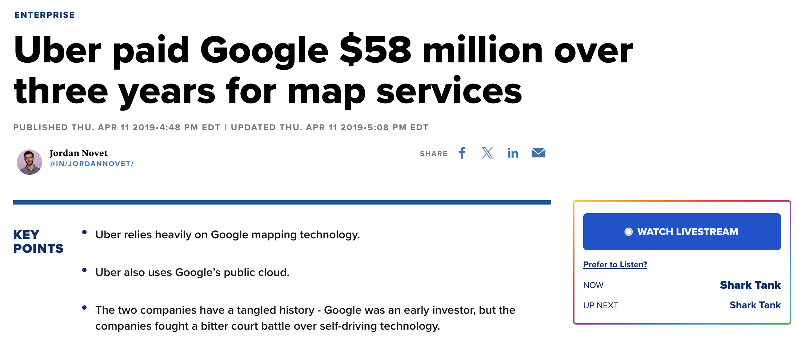
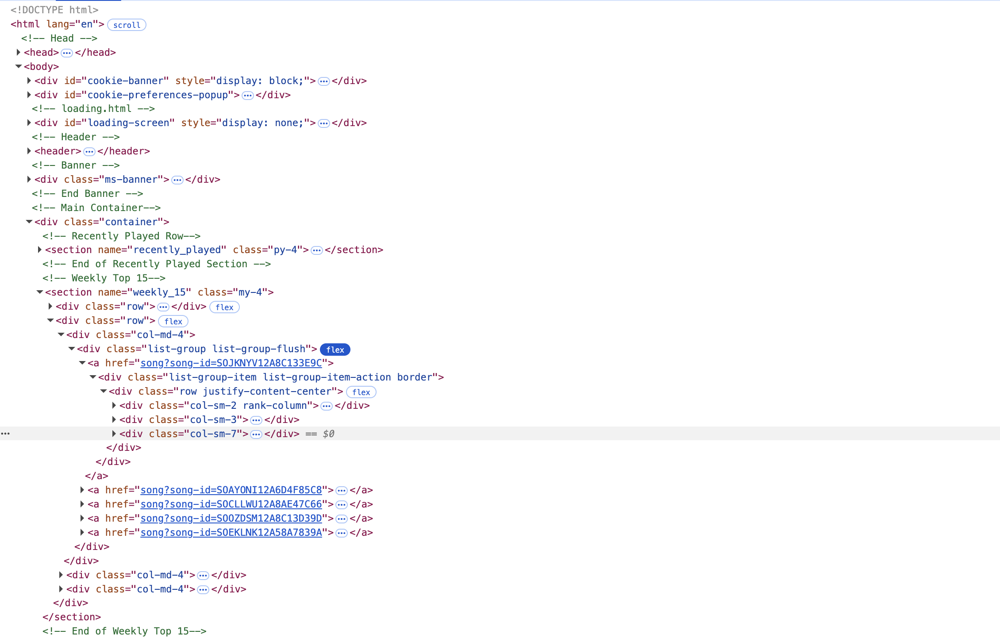
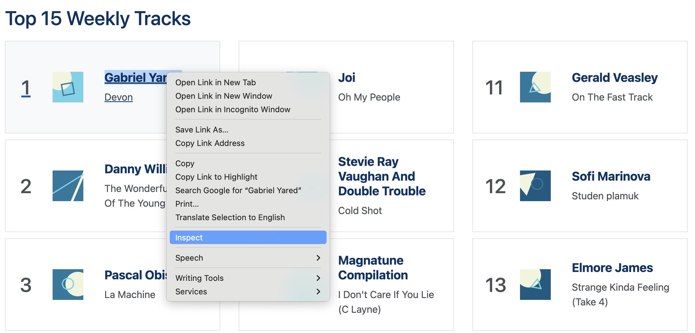
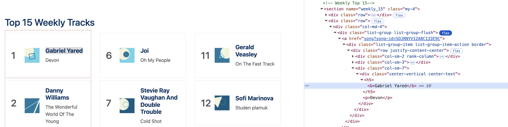

# Load the required library
library(httr)
library(dplyr)
# Specify the URL of the API
api_url <- "https://api.music-to-scrape.org"
# Remember, the API documentation is available at https://api.music-to-scrape.org/docs
# We are going to extract top ranked songs played in Week 42 of 2023
# Set up the url to get response from (Closely follow the API documentation)
response <- GET(paste0(api_url, '/charts/top-tracks?week=42&year=2023'))
# Check if the request was successful
if (response$status_code == 200) {
# If successful (code == 200), parse the responses into lists and then combine into data
# Parse the JSON response
data <- content(response, "parsed")
# Compile data in a table and select columns
song_data <- data$chart %>% bind_rows() %>% select(name, artist)
} else {
# Error message for unsuccessful request
cat("Failed to retrieve data. Status code:", response$status_code, "\n")
song_data <- NULL
}
# View the resulting song data
print(song_data)8 Collected Structured and Unstructured Data
Learning Goals
By the end of this lecture, you should be able to:
- Distinguish structured, semi-structured, and unstructured data
- Explain intuitively the differences between user interface and application program interface (API)
- List the advantages of APIs as a means to collect data and apply use APIs to acquire data
- Know the basic procedures of website scraping
- Understand the ethics of web scraping
8.1 The Business Challenge
Data is often called the “new oil” of the digital economy. Yet, just as not all oil flows neatly through pipelines, not all data comes in ready-to-use formats. Some data is nicely organized in databases, spreadsheets, or CSV files, while other data appears in messy, irregular, or unconventional formats.
So far in this subject, we have mainly worked with structured data. In practice, however, such well-organized data is something of a luxury. It is costly to collect, standardize, and store, and organizations often invest heavily in information systems just to maintain it. At the same time, vast amounts of potentially valuable data exist outside these traditional formats.
In this chapter, we will explore structured, semi-structured, and unstructured data. You will learn the defining characteristics of each category, why they matter for business analytics, and how analysts can collect and make use of data from different sources.
8.2 Structured, Semi-structured, and Unstructured Data
Just as crude oil must be refined before it becomes useful, raw data only generates value when it can be systematically collected, processed, and analyzed. Depending on how well-defined its format is, data is typically classified into three broad categories:
- Structured data
- Unstructured data
- Semi-structured data
Structured Data
Structured data, as the name suggests, refers to highly organized data that follows a predefined schema. It is stored in formats such as relational databases, spreadsheets, and CSV files, where every piece of data is clearly defined and fits into a particular row and column. Most data that we have worked with so far in this subject belongs to this category.
A well-defined structure for data often consists of:
Rows (Records, Observations): Each row corresponds to one unique instance of the entity being described (e.g., a single customer, a single sales transaction).
Columns (Fields, Variables): Columns represent attributes or characteristics of the entity (e.g., customer age, transaction amount).
Tables: Data is organized into tables that can be linked to each other through shared variables or keys (e.g., linking different customer data using customer ID).
Because of their consistency, structured datasets can be easily managed and analyzed with tools like SQL, R’s Tidyverse, or Python’s Pandas. These tools allow us to perform operations easily on structured data by doing filtering, grouping, aggregating, merging, and reshaping data efficiently.
Examples
Banking transaction records (date, amount, sender, recipient)
Inventory databases (product ID, stock quantity, unit price)
Employee HR records (employee ID, salary, department)
Structured data’s strength lies in its precision and reliability. However, it is also limited in scope and volume. Many real-world data and information, such as consumer opinions, video content, or machine logs, cannot be easily captured in neat rows and columns.
Unstructured Data
In reality, structured data represents only a small fraction of all data. As predicted by International Data Corporation (IDC) and Seagate, the global data endowment will continue growing exponentially and reach 163 zettabytes (i.e., 1 trillion gigabytes) by the end of 2025, and among all data, more than 80% is unstructured.
Unstructured data, in stark contrast to structured data, lacks a fixed or consistent schema. It is generated in diverse formats and is often messy, irregular, or context-dependent. Broadly speaking, all information that we generate, unless it comes with predefined structures, belongs to unstructured data. Unlike structured data, it cannot be easily represented in tables of rows and columns.
Examples
- Textual data: emails, chat messages, social media posts, product reviews.
- Multimedia data: images, audios, videos, surveillance cameras recordings, readings/images from medical devices.
Unstructured data is pervasive because much of the information we generate in daily life does not naturally follow a rigid, tabular structure. It posits significant challenges in collecting and processing data:
- Lack of standardization.
- Unstructured data is in very different categories. Even within the same category, unstructured data may be recorded in different formats.
- Computers and programs cannot easily tackle data without standardized formats and patterns,
- Volume and variety
- The scale of unstructured data is massive: billions of social media posts per day, countless images and videos uploaded online, etc.
- The variety of formats requires specialized tools for each type (e.g., natural language processing for text, computer vision for images).
- Collection challenges
- Unstructured data is often dispersed across platforms and devices. Collecting it may involve:
- Massive manual work (i.e., human labelling of data, CAPTCHA)
- Web scraping (can be technically challenging and sometimes legally restricted)
- Large storage infrastructures (extremly costly)
- Unstructured data is often dispersed across platforms and devices. Collecting it may involve:
- Processing requirements
- Before analysis, unstructured data usually must undergo heavy preprocessing and transformation (e.g., machine learning algorithms and AI):
- Text: tokenization, stop-word removal, stemming, sentiment analysis (note that Google BERT and GPT have largely facilitated the processing of texts and natural language)
- Images: resizing, labeling, feature extraction
- Audio: noise reduction, speech-to-text transcription
- Before analysis, unstructured data usually must undergo heavy preprocessing and transformation (e.g., machine learning algorithms and AI):
Semi-Structured Data
Between these two extremes is semi-structured data. Different from structured data, semi-structured data does not fit neatly into tables, but it still carries markers or tags that provide some structure. Compared with purely unstructured data, semi-structured data has a flexible but interpretable format.
Examples
- JSON file (as we discussed in the previous week).
- HTML documents: HTML tags (
<div>,<h1>,<p>) give structures, but the actual text and images inside the tags are unstructured. - Emails: contain structured fields (sender, recipient, timestamp, subject) but also unstructured free-form text in the body.
- Chat logs: often include metadata (user ID, time) plus free text content.
Summary
Structured data is easy to store, query, and analyze, but costly to maintain and often limited in scope.
Unstructured data is abundant and rich but difficult to process without specialized tools.
Semi-structured data sits in the middle: it provides some structure but still requires significant preprocessing before analysis.
Remark
For structured data, we have databases to manage them and apply to them relatively standardized data wrangling tools (e.g., dplyr). However, we do not have such luxury for less structured data. The ways of collecting and using less structured data usually vary across different cases. Do not be panic if the methods that we use in our examples do not work in a different case. What matters to us is to get familiar with the workflow.
8.3 Getting Data Using Application Program Interface (API)
In library, we may not always be able to go and look for the books directly - especially when some books may be stored in the staff-only area or difficult to find. In such cases, we can submit requests to a librarian, and the librarian gets the books for us from the shelves.
This process is a nice analogy to what happens when we acquire data via application program interface (API):
- You are a data user
- The librarian is the API
- The staff-only area is the internal system or database you don’t have access to
- The request for a book is the message your program sends to the API
- The book the librarian brings back is the data or service the API provides
Definitions of API
Technically speaking, Application program interface (API) builds a “connection” between computer and computer programs and specifies a standard set of rules or procedures that an application program will do. This is in contrast to user interfaces (UI) where users directly interact with computers or programs.
Example: Uber’s Usage of Google Map API
We use web-based Google Map or Google Map App to search for locations and navigate to places we want to go. In such scenarios, we, as human users, are directly interact with the user interface (UI) of Google Map to acquire data and information.
As a giant in ride-share and door-to-door delivery services, Uber uses Google Map to obtain data and information that they need for their apps (e.g., map, address information, routes, estimated time of arrival, etc.). In contrast to our usage of Google Map, Uber gets access to Google Map data by using programs to interact with Google Map’s application program interface (API). This allows Uber to get real-time data from Google Map and use such data in real time. We cannot imagine Uber would be able to kick start its business without the Google Map API.
Of course, the access to Google Map via API is not free. Uber pays millions to Google in order to use their services.

Advantages of APIs
Nowadays, many data providers set up APIs as a preferred way to provide data to data users, and there are several advantages of doing so:
- Controlled Access. APIs allow data providers to share only selected data or functions, rather than giving users full access to internal systems and data servers. This helps protect sensitive data and system integrity.
- Standardization. By providing a standardized way to access data, APIs reduce the need to handle custom requests or build separate solutions for each user, thus reducing the costs.
- Innovation and Ecosystem Growth. APIs allow third-party developers to build new apps or services that enhance the value of data (e.g., Google Maps used in ride-sharing apps).
- Usage Tracking and Monetization. APIs make it easy to monitor who is using the data and how often. This opens up possibilities for charging based on usage or offering premium tiers.
Workflow of Using APIs to Acquire Data
Most APIs are user-friendly because the rules and protocols of data acquisition have already been set up by data providers. Although every API may differ significantly from the other in many ways. Standard workflow still applies to the usage of APIs.
We are going to use the “Music to Scrape” website (https://music-to-scrape.org/) to walk through the usage of APIs.
Read User Manuals
APIs are structured differently for different functions and needs. In practice, every API may have its own predefined functions and specific requirements for inputs and outputs. Therefore, it is rather important to carefully read through API user manuals before starting using it. Additionally, data providers often provide detailed user manuals and sample program for their APIs. As a user, it would be useful to go through these materials (if available).
Obtaining API Key
In many cases, the access to APIs is limited - you need to get an API key so that you can use the API. We can think API key as the log-in credentials for programs. Data providers can use API keys to track the download and the usage of data and prevent unwarranted access to their data.
For the simple website we are working on, there is no need to obtain an API key. In the workshop, we are going to apply for a free API key from the Federal Reserve Economic Data (FRED).
Using APIs
Before proceed with programming, we always start by reading API manuals carefully (https://api.music-to-scrape.org/docs). We are going to follow the example provided by the website to extract top-tracts for Week 42 of 2023.
The httr package in R is used for working with APIs. It provides tools that let your R program send requests to websites or servers and receive data in return. Note that, not all APIs use httr. You need to follow closely to the user manual of the API that you are using.
8.4 Website Scraping
It may not always be feasible to obtain data from well-structured databases or APIs. In fact, plenty of useful data could be from unstructured sources. These data could be from newspapers, surveys,
Sometimes, we may be interested in the data and information on websites and would like to obtain these data in a batch. Website scraping is the technique that allows us to do so.
Website Basics
Websites are one of the most important sources for us to obtain data that are not available from structured databases. For example, we may be interested in It may not be difficult for us to manually copy and paste inforamtion and data from websites if we are dealing with a small number of data points
HTML (Hypertext Markup Language) is the programming language used for building up a website. It defines how each website is displayed and presented on website browsers. Basic knowledge of HTML would help us understand website structures and master basic techniques for website scraping. Note that the technical details of HTML is not required for this subject.
Although websites appear very different from each other - some websites are full of fancy animation and decorations, while others are plain and simple, they are constructed using the same set of building blocks, HTML elements. HTML use a standard set of tags to identify each HTML element on a website (sections, divisions, headings of different levels, paragraphs, image blocks etc.). As these tags are standardized across different websites, we are able to extract the contents
Below is a simple example of HTML file, and we are going to briefly elaborate on the building blocks of websites.
<!DOCTYPE html>
<html>
<head>
<title>My First Page</title>
<style>
body {
font-family: Arial, sans-serif;
line-height: 1.6;
margin: 20px;
background-color: #f9f9f9;
}
h1 {
color: darkblue;
text-align: center;
}
section {
margin-bottom: 30px;
padding: 20px;
background-color: #ffffff;
border: 1px solid #ddd;
border-radius: 8px;
}
</style>
</head>
<body>
<h1>Welcome to My Website!</h1>
<section id="section1">
<h2>About This Site</h2>
<div>
<p>This is a paragraph of text.</p>
<p>Because I wanted to learn HTML and share my interests.</p>
</div>
</section>
<section id="section2">
<h2>Gallery</h2>
<div>
<h3>What You'll Find Here</h3>
<p>Pictures, stories, and ideas I enjoy.</p>
<img src="photo.jpg" alt="A photo of a sunset">
</div>
</section>
</body>
</html>Website Scraping Workflow
We are going to work on a website, https://music-to-scrape.org, to learn basic website scraping techniques and walk through the basic procedures. This practice, however, is by no means a sophisticated way of web scraping nor can it be directly used on other websites.
Understand the Website Structure
As a preparation for website scraping, we are going to first get a basic sense of the HTML document of the website.

Locate the Contents
We need to locate the contents that we want to scrape in the HTML document. An HTML document is basically semi-structured data with tags labeling contents of a website. Hence, what we need to do is to locate the contents and identify the tags labeling the contents.
For most mainstream browsers (e.g., Google Chrome, Firefox, and Microsoft Edge), we can view the HTML code of websites under the “developer mode” (or similar).
Additionally, we can use the inspection function to locate the contents of our interest in HTML file. For example, if we are interested in obtaining the names of song writers/singers under “Top 15 Weekly Tracks” from https://music-to-scrape.org, we can select the song name and use right click in Google Chrome to inspect the HTML file:

The name appears in the HTML file:

The key to scrape information and data from websites is to precisely locate relevant contents using HTML tags. If we would like to obtain the name information, we need to first find a way to uniquely locate the contents based on CSS selectors.
The contents are under the section
<section name="weekly_15">We can locate “Gabriel Yared” uniquely by following the hierarchy of the HTML document:
<a>,<h5>, and lastly<b>.
Scrape the Contents
After locating the contents and identifying the tags, we use the following program to scrape the information we need from the website.
# Load the necessary libraries
library(rvest)
library(dplyr)
# Specify the URL of the website
url <- "https://music-to-scrape.org"
# Read the HTML code of the website into R
page <- read_html(url)
# Extract the desired information using the tags (here, names from the weekly top 15)
names <- page %>%
html_nodes("section[name='weekly_15']") %>% #Locate to the section
html_elements('a') %>% # Get to the elements to be scraped through the HTML hierarchy
html_element('h5') %>%
html_element('b') %>%
html_text() #Grab the text from the selected contentshtml_element() and html_elements()
These two arguments are in singular and plural forms, respectively:
html_element()selects the first match of the HTML tag and stops there.html_elements()selects all matched tags through of the HTML document.
Combining the two would help you accurately locate and extract information you want. In the example website that we are working on:
<a>is a label corresponding to each block showing a top song on the website. If we want to get all the top song blocks selected, we need to usehtml_elements()to select all of them.- You may have a try by changing it to
html_element().
- You may have a try by changing it to
<h5>and<b>under each block tagged by<a>only appear once - it does not matter in this case whether we use singular or plural. In some other cases, it may be necessary to use singular or plural form.
15 min
Modify the code above to address the following questions:
There is one line of code selecting HTML tags redundant. Find and remove it from the program.
Collect both the names of artists and musics in the weekly top 15 list and make the output as a table.
Obtain usernames of recent active users on the website.
Solution
html_element('h5')is redundant. This is because under each node<a>, we are able to uniquely locate the name using the tag<b>. Hence, there is no need to specify another layer<h5>in between.
# Specify the URL of the website
url <- "https://music-to-scrape.org"
# Read the HTML code of the website into R
page <- read_html(url)
# Locate the information to be scraped using HTML tags
# Extract the information from HTML document
data <- page %>%
html_nodes("section[name='weekly_15']") %>% #Locate to the section
html_elements('a') %>% # Get to the elements to be scraped through the HTML hierarchy
html_elements('b,p') %>%
html_text() #Grab the text from the selected contents
# Convert into tibble
song_data <- tibble(
artists = data[seq(1, length(data), 2)],
songs = data[seq(2, length(data), 2)]
)
print(song_data)seq() in R
seq() is a useful function in R to generate a sequence. Here, we are using seq() to generate a list of indices to select elements from a list.
The function has three arguments: seq(from = , to = , by = )
from =specifies the startto =specifies the endby =specifies the step size (i.e. the gap between two consecutive numbers)
seq(1, length(data), 2) will generate a list as (1, 3, 5, …) in this case until sequence reach to the length of the list.
- We need to use “Inspect” function on your browser to locate the contents in the HTML file and modify the program accordingly. Note that you need to change the sections to be scraped in this exercise.
# Specify the URL of the website
url <- "https://music-to-scrape.org"
# Read the HTML code of the website into R
page <- read_html(url)
# Locate the information to be scraped using HTML tags
# Extract the information from HTML document
active_users <- page %>%
html_nodes("section[name='recent_users']") %>% #Locate to the section
html_elements('a') %>% # Get to the elements to be scraped through the HTML hierarchy
html_elements('h5') %>%
html_text() #Grab the text from the selected contents
print(active_users)Pros and Cons of Web Scraping
Collecting data through website scraping has pros and cons.
Pros:
- Ability to obtain real-time data, no need to wait for databases.
- Full flexibility in data collection.
Cons:
- Legal and ethical issues regarding website scraping.
- Many websites have installed protection mechanisms (e.g., bot detectors and CAPTCHA)
- Unstable performance due to website maintenance, restructuring, and limited internet access.
- Inconsistent data quality, requires additional work to clean up collected data.
More Advanced Web Scraping
As you will notice along the way, getting information directly from HTML contents becomes less feasible nowadays. Here are the reasons:
Dynamic and Interactive Web Pages In the early web, HTML pages were mostly static: the content was directly embedded in the HTML source (the same as the simple website that we just worked on) Today, many websites use JavaScript frameworks (e.g., React, Angular, Vue) to dynamically load and render content in the browser. As a result, if you fetch the raw HTML, you often see only the skeleton structure (
<div>placeholders), while the actual text, images, or tables are injected later by scripts.Anti-scraping Measures and Legal Restrictions Many websites deliberately make HTML scraping difficult by using obfuscation, CAPTCHAs, or rate-limiting. Some also encrypt content or require user interaction (scrolling, clicking) to load additional data.
As a result, you have to sharpen your tools to get adapted to the changing world. To get into the web scraping space, we need to have solid knowledge about HTML and Javascript. Additionally, we need to be familiar with more advanced web scraping frameworks (e.g., selenium).
Ethics of Web Scraping
- Respect for Website Terms and Conditions
- Many websites describe the usage of website data in their terms and conditions. Always check these documents before conducting website scraping to avoid getting into trouble.
- Avoiding Hindering Normal Website Operations
- Excessive website scraping can strain website servers and result in slowed performance or even downtime. Ethical scraping practices include implementing rate limits, setting up program sleep time, and avoiding high-frequency visits in peak times.
- Be Aware of Sensitive and Private Data
- Certain data scraped from websites, even though they are public, could contain sensitive information. Make sure your website scraping practice and data usage are in compliance with relevant data privacy protection laws.
- Use the Data Ethically -Using scraped data for good purposes. Do not use scraped data for spamming, unauthorized data resale, or activities infringing on intellectual property rights. Be careful about your legal responsibility and ligitation risk when using scraped data for commercial purposes.